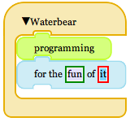

Waterbear is a toolkit for creating drag-and-drop programming languages, with some example languages you can play around with and learn from. The goal is to make it easy to wrap other existing languages with Waterbear blocks to create draggable, snappable syntaxes for them.
Waterbear is a toolkit for making programming more accessible and fun. Having a visual language means you don't have to focus on learning a syntax to start programming. Waterbear is good for kids, artists, and anyone who would like to make their computer do something new without having to become a "programmer" (although it could lead to that).
Waterbear's blocks are heavily inspired by MIT's Scratch language, but the goal is not to slavishly duplicate Scratch, or to create a programming language, but to create a visual syntax tool that can be used with a variety of languages and projects, and to make it as widely available as possible. Waterbear runs in a variety of web browsers, including Mobile Safari on the iPad.
 Waterbear's system of draggable, snappable blocks are built using clean HTML5, CSS3, and Javascript. The Javascript playground for Waterbear allows you to create Waterbear scripts, see the Javascript it will generate, and run it right in the browser.
Waterbear's system of draggable, snappable blocks are built using clean HTML5, CSS3, and Javascript. The Javascript playground for Waterbear allows you to create Waterbear scripts, see the Javascript it will generate, and run it right in the browser.
Waterbear is pre-alpha software, very raw, and in constant flux right now.